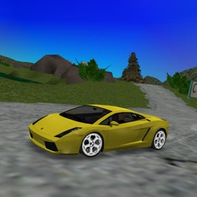
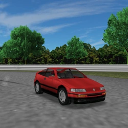

✖
☰
☰
Cars III
☆ designates co-authors, ＋ designates add-ons
horizontal swipe or arrows <- -> for quick page nav
Cars III
Ferrari 550 Barchetta
Chaparral 2F
Pagani Zonda C12-S
Hyundai Tiburon Pursuit
☆Sora
An Actual Donut

Lamborghini Gallardo

Honda CR-X SiR
Koenigsegg CC
Spyker C8 Laviolette
Chrysler Defense M1 Abrams
BMW M3-GTR (NFS Most Wanted)
Ford GT40 MKIII